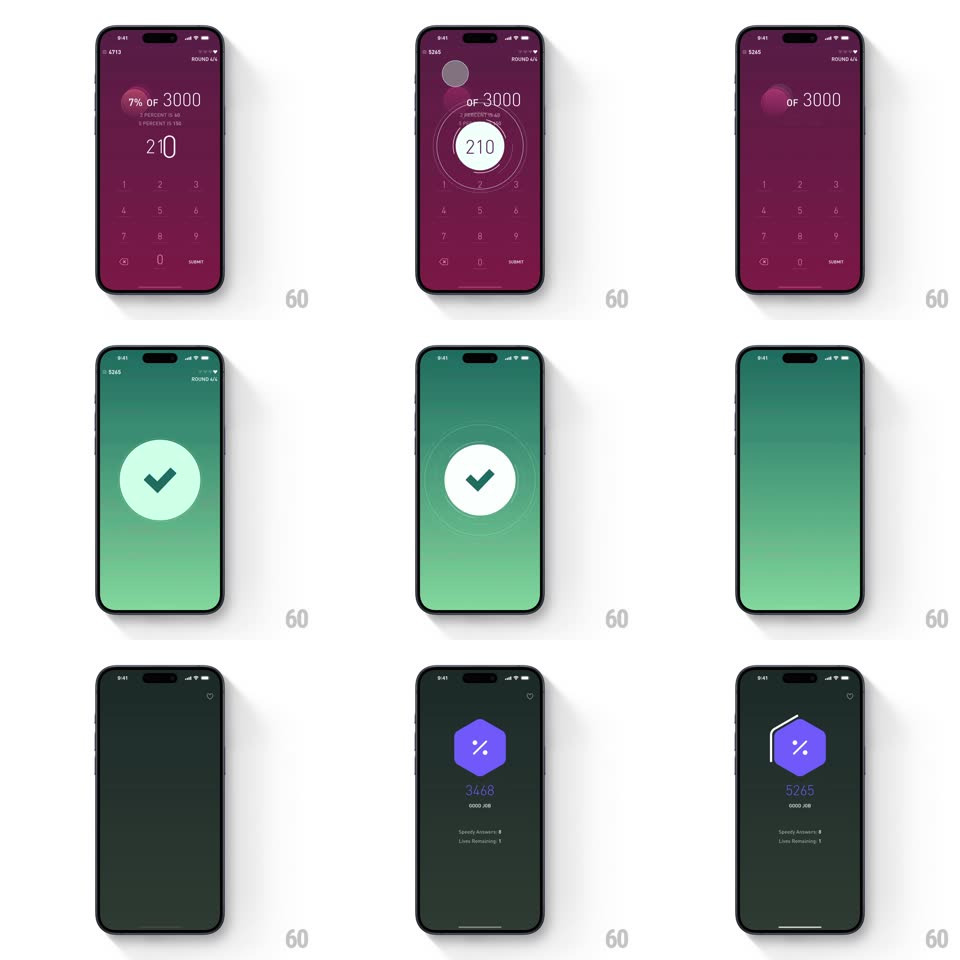

Media
Frame-by-frame

Rebuild this interaction 1:1: Elevate's correct-answer celebration - submitting "210" to "7% OF 3000" pulses the score ring, floods the screen green, lands a white check with radiating rings, then cuts to the dark results screen where the score ticks up to 5265 under a purple hexagon.

Rebuild this interaction 1:1: Elevate's correct-answer celebration - submitting "210" to "7% OF 3000" pulses the score ring, floods the screen green, lands a white check with radiating rings, then cuts to the dark results screen where the score ticks up to 5265 under a purple hexagon. ## Integration Integration: stack-agnostic spec - springs given as stiffness/damping, timed motions as duration + curve; map every value to your framework and animation library of choice. ## Scene Plum question screen (score top-left, ROUND 4/4 top-right, "7% OF 3000", keypad); a full green-gradient takeover with a white circle check; then a near-black results screen: purple hexagon with %, the score ticking, "GOOD JOB", and small stat rows (Speedy Answers, Lives Remaining). ## Motion spec Pattern: flood-and-tick reward sequence. - On submit: the entered answer locks, the round-progress ring around it flashes green and pulses (scale 1 -> 1.08, 200ms). - The whole screen floods green - a radial wipe from the answer outward (350ms) - and a white check circle scales in (spring ~380/16) while two thin rings radiate outward from it (scale 1 -> 2.2, fading, 700ms, staggered 150ms). - Hold ~600ms, then cut to the dark results screen: the hexagon drops in (spring ~320/20), and the score counts up rapidly from the old value to 5265 (rolling digits, ~900ms, ease-out), "GOOD JOB" fading in beneath mid-count. - Stat rows slide up staggered 120ms apart after the count lands. ## Calibration - The green flood starts AT the answer's position - the cause radiates the effect. - The count-up must be fast and legible: large mono-ish numerals, no commas animating. ## Reduced motion Green crossfade; score jumps to final. ## Don't miss - The radiating rings are stroke-only circles that thin as they expand. - The results screen is near-black, not plum - a clear scene change marks the round's end.